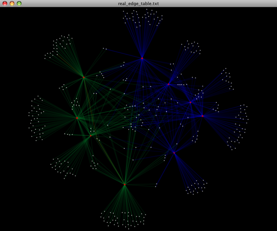

| News and Announcements » |
This tutorial explains how to use the QIIME (Quantitative Insights Into Microbial Ecology) Pipeline to process data from high-throughput 16S rRNA sequencing studies. If you have not already installed qiime, please see the section Installing Qiime first. The purpose of this pipeline is to provide a start-to-finish workflow, beginning with multiplexed sequence reads and finishing with taxonomic and phylogenetic profiles and comparisons of the samples in the study. With this information in hand, it is possible to determine biological and environmental factors that alter microbial community ecology in your experiment.
As an example, we will use data from a study of the response of mouse gut microbial communities to fasting (Crawford et al., 2009). To make this tutorial run quickly on a personal computer, we will use a subset of the data generated from 5 animals kept on the control ad libitum fed diet, and 4 animals fasted for 24 hours before sacrifice. At the end of our tutorial, we will be able to compare the community structure of control vs. fasted animals. In particular, we will be able to compare taxonomic profiles for each sample type, differences in diversity metrics within the samples and between the groups, and perform comparative clustering analysis to look for overall differences in the samples.
In this walkthrough, text like the following:
print_qiime_config.py
denotes the command-line invocation of scripts. You can find full usage information for each script by passing the -h option (help) and/or by reading the full description in the Documentation. Execute all tutorial commands from within the qiime_tutorial directory, which can be downloaded from here: QIIME Tutorial files.
To process our data, we will perform the following analyses, each of which is described in more detail below:
All the files you will need for this tutorial are here (ftp://thebeast.colorado.edu/pub/QIIME-v1.5.0-dependencies/qiime_tutorial-v1.5.0.zip). Descriptions of these files are below.
This is the 454-machine generated FASTA file. Using the Amplicon processing software on the 454 FLX standard, each region of the PTP plate will yield a fasta file of form 1.TCA.454Reads.fna, where “1” is replaced with the appropriate region number. For the purposes of this tutorial, we will use the fasta file Fasting_Example.fna.
This is the 454-machine generated quality score file, which contains a score for each base in each sequence included in the FASTA file. Like the fasta file mentioned above, the Amplicon processing software will generate one of these files for each region of the PTP plate, named 1.TCA.454Reads.qual, etc. For the purposes of this tutorial, we will use the quality scores file Fasting_Example.qual.
The mapping file is generated by the user. This file contains all of the information about the samples necessary to perform the data analysis. At a minimum, the mapping file should contain the name of each sample, the barcode sequence used for each sample, the linker/primer sequence used to amplify the sample, and a Description column. In general, you should also include in the mapping file any metadata that relates to the samples (for instance, health status or sampling site) and any additional information relating to specific samples that may be useful to have at hand when considering outliers (for example, what medications a patient was taking at time of sampling). Of note: the sample names may only contain alphanumeric characters (A-z) and the dot (.). Full format specifications can be found in the Documentation (File Formats).
For the purposes of this tutorial, we will use the mapping file Fasting_Map.txt. The contents of the mapping file are shown here - as you can see, a nucleotide barcode sequence is provided for each of the 9 samples, as well as metadata related to treatment group and date of birth, and general run descriptions about the project. Fasting_Map.txt file contents:
Note
Before beginning with QIIME, you should ensure that your mapping file is formatted correctly with the check_id_map.py script. Type:
check_id_map.py -m Fasting_Map.txt -o mapping_output
This utility will display a message indicating whether or not problems were found in the mapping file. A HTML file showing the location of errors and warnings will be generated in the output directory, and will also be written to the output to a log file. Errors will cause fatal problems with subsequent scripts and must be corrected before moving forward. Warnings will not cause fatal problems, but it is encouraged that you fix these problems as they are often indicative of typos in your mapping file, invalid characters, or other unintended errors that will impact downstream analysis. A corrected_mapping.txt file will also be created in the output directory, which will have a copy of the mapping file with invalid characters replaced by underscores.
Reverse primers can be specified in the mapping file, for removal during the demultiplexing step. This is not required, but it is STRONGLY recommended, as leaving in sequences following primers, such as sequencing adapters, can interfere with OTU picking and taxonomic assignments with RDP.
An example mapping file with faux reverse primers specified, using the ReversePrimer field, is available here: reverse primer mapping file.
Note
The reverse primers, like the forward primers, are written in 5’->3’ direction. In this case, these are not the true reverse primers used, but rather just a somewhat conserved site in the sequences used for this example.
An example image of a the entire primer construct and amplicon is shown below, using QIIME nomenclature:

454 sequencing, in most cases, generates sequences that begin at the BarcodeSequence, which is followed by the LinkerPrimerSequence, both of which are automatically removed during the demultiplexing step described below. However, the ReversePrimer (i.e., the primer at the end of the read) is not removed by default, and needs to be specified. The adapter sequence (Adapter B) does not match genomic data, such as 16S sequences, and as such it can disrupt analyses.
The next task is to assign the multiplexed reads to samples based on their nucleotide barcode. Also, this step performs quality filtering based on the characteristics of each sequence, removing any low quality or ambiguous reads. The script for this step is split_libraries.py. A full description of parameters for this script are described in the Documentation. For this tutorial, we will use default parameters (minimum quality score = 25, minimum/maximum length = 200/1000, no ambiguous bases allowed and no mismatches allowed in the primer sequence). Type:
split_libraries.py -m Fasting_Map.txt -f Fasting_Example.fna -q Fasting_Example.qual -o split_library_output
This invocation will create three files in the new directory split_library_output/:
A few lines from the seqs.fna file are shown below:
Note
Reverse primer removal can be accomplished by adding the -z option. An example command using the mapping file with reverse primers described above is this:
split_libraries.py -m Fasting_Map_reverse_primers.txt -f Fasting_Example.fna -q Fasting_Example.qual -z truncate_only -o split_library_output_revprimers/
The following is the first several lines of the split_library_log.txt
Note
If the number of sequences where the reverse primer is not identifiable is high, you want to check the primer sequence to make sure it is in 5’->3’ orientation, or increase the number of mismatches allowed with –reverse_primer_mismatches.
Data that are already demultiplexed can have reverse primers removed using the stand-alone script truncate_reverse_primer.py.
Here we will be running the pick_de_novo_otus.py workflow, which performs a series of small steps by calling a series of other scripts automatically. This workflow consists of the following steps:
Using the output from split_libraries.py (the seqs.fna file), run the following command:
pick_de_novo_otus.py -i split_library_output/seqs.fna -o otus
Optionally, we could denoise the sequences based on clustering the flowgram sequences. For a single library/sff file we can simply use the workflow script pick_de_novo_otuss.py, by providing the script with the sff file and the metadata mapping file. For multiple sff files refer to the special purpose tutorial Denoising of 454 Data Sets.
The results of pick_de_novo_otus.py are in otus/, and a description of the steps performed and the results follow:
At this step, all of the sequences from all of the samples will be clustered into Operational Taxonomic Units (OTUs) based on their sequence similarity. OTUs in QIIME are clusters of sequences, frequently intended to represent some degree of taxonomic relatedness. For example, when sequences are clustered at 97% sequence similarity with uclust, each resulting cluster is typically thought of as representing a species. This model and the current techniques for picking OTUs are known to be flawed, however, in that 97% OTUs do not match what humans have called species for many microbes. Determining exactly how OTUs should be defined, and what they represent, is an active area of research.
pick_de_novo_otus.py assigns sequences to OTUs at 97% similarity by default. Further information on how to view and change default behavior will be discussed later.
Since each OTU may be made up of many related sequences, we will pick a representative sequence from each OTU for downstream analysis. This representative sequence will be used for taxonomic identification of the OTU and phylogenetic alignment. QIIME uses the OTU file created above and extracts a representative sequence from the fasta file by one of several methods.
In the otus/rep_set/ directory, QIIME has created two new files - the log file seqs_rep_set.log and the fasta file seqs_rep_set.fasta containing one representative sequence for each OTU. In this fasta file, the sequence has been renamed by the OTU, and the additional information on the header line reflects the sequence used as the representative:
Note
A primary goal of the QIIME pipeline is to assign high-throughput sequencing reads to taxonomic identities using established databases. This provides information on the microbial lineages found in microbial samples. By default, QIIME uses the RDP classifier to assign taxonomic data to each representative sequence from step 2, above.
In the directory otus/rdp_assigned_taxonomy/, there will be a log file and a text file. The text file contains a line for each OTU considered, with the RDP taxonomy assignment and a numerical confidence of that assignment (1 is the highest possible confidence). For some OTUs, the assignment will be as specific as a bacterial species, while others may be assignable to nothing more specific than the bacterial domain. Below are the first few lines of the text file and the user should note that the taxonomic assignment and confidence numbers from their run may not coincide with the output shown below, due to the RDP classification algorithm:
Note
Alignment of the sequences and phylogeny inference is necessary only if phylogenetic tools such as UniFrac will be subsequently invoked. Alignments can either be generated de novo using programs such as MUSCLE, or through assignment to an existing alignment with tools like PyNAST. For small studies such as this tutorial, either method is possible. However, for studies involving many sequences (roughly, more than 1000), the de novo aligners are very slow and assignment with PyNAST is preferred. Since this is one of the most computationally intensive bottlenecks in the pipeline, large studies benefit greatly from parallelization of this task (described in detail in the Documentation): When using PyNAST as an aligner (the default), QIIME must know the location of a template alignment. Most QIIME installations use the greengenes file ‘core_set_aligned.fasta.imputed’ by default.
After aligning the sequences, a log file and an alignment file are created in the directory otus/pynast_aligned_seqs/.
Before inferring a phylogenetic tree relating the sequences, it is beneficial to filter the sequence alignment to removed columns comprised of only gaps, and locations known to be excessively variable. Most QIIME installations use a lanemask file named either lanemask_in_1s_and_0s.txt or lanemask_in_1s_and_0s by default. After filtering, a filtered alignment file is created in the directory otus/pynast_aligned_seqs/.
The filtered alignment file produced in the directory otus/pynast_aligned_seqs/ is then used to build a phylogenetic tree using a tree-building program.
The Newick format tree file is written to rep_set.tre, which is located in the otus/ directory . This file can be viewed in a tree visualization software, and is necessary for UniFrac diversity measurements and other phylogenetically aware analyses (described below). The tree obtained can be visualized with programs such as FigTree, which was used to visualize the phylogenetic tree obtained from rep_set.tre.

Using taxonomic assignments (step 3) and the OTU map (step 1) QIIME assembles a readable matrix of OTU abundance in each sample with meaningful taxonomic identifiers for each OTU.
The result of this step is otu_table.biom, which is located in the otus/ directory. For more information about the OTU table format, which relies on the biom-format, please go here: biom-format
To view the number of sequence reads which were assigned to the otu table (otus/otu_table.biom), type:
print_biom_table_summary.py -i otus/otu_table.biom
The output shows that there are relatively few sequences in this tutorial example, but the sequences present are fairly evenly distributed among the 9 microbial communities.
Note
The QIIME pipeline includes a very useful utility to generate images of the OTU table. The script is make_otu_heatmap_html.py. Type:
make_otu_heatmap_html.py -i otus/otu_table.biom -o otus/OTU_Heatmap/
An html file is created in the directory otus/OTU_Heatmap/. You can open this file with any web browser, and will be prompted to enter a value for “Filter by Counts per OTU”. Only OTUs with total counts at or above this threshold will be displayed. The OTU heatmap displays raw OTU counts per sample, where the counts are colored based on the contribution of each OTU to the total OTU count present in that sample (blue: contributes low percentage of OTUs to sample; red: contributes high percentage of OTUs). Leave the filter value unchanged, and click the “Sample ID” button, and a graphic will be generated like the figure below. For each sample, you will see in a heatmap the number of times each OTU was found in that sample. You can mouse over any individual count to get more information on the OTU (including taxonomic assignment). Within the mouseover, there is a link for the terminal lineage assignment, so you can easily search Google for more information about that assignment.

Alternatively, you can click on one of the counts in the heatmap and a new pop-up window will appear. The pop-up window uses a Google Visualization API called Magic-Table. Depending on which table count you clicked on, the pop-up window will put the clicked-on count in the middle of the pop-up heatmap as shown below. For the following example, the table count with the red arrow mouseover is the same one being focused on using the Magic-Table.

On the original heatmap webpage, select the “Taxonomy” button instead: you will generate a heatmap keyed by taxon assignment, which allows you to conveniently look for organisms and lineages of interest in your study. Again, mousing over an individual count will show additional information for that OTU and sample.

An alternative to viewing the OTU table as a heatmap is to create an OTU network, using the following command.:
make_otu_network.py -m Fasting_Map.txt -i otus/otu_table.biom -o otus/OTU_Network
To visualize the network, we use the Cytoscape program (which you can run by calling cytoscape from the command line – you may need to call this beginning either with a capital or lowercase ‘C’ depending on your version of Cytoscape), where each red circle represents a sample and each white square represents an OTU. The lines represent the OTUs present in a particular sample (blue for controls and green for fasting). For more information about opening the files in Cytoscape please refer to Making Cytoscape Networks.
You can group OTUs by samples or categories (when “-c” option is passed) by different taxonomic levels (division, class, family, etc.) with the workflow script summarize_taxa_through_plots.py. Note that this process depends directly on the method used to assign taxonomic information to OTUS (see Assigning Taxonomy above). Type:
summarize_taxa_through_plots.py -i otus/otu_table.biom -o wf_taxa_summary -m Fasting_Map.txt
The script will generate a new table grouping sequences by taxonomic assignment at various levels, for example the phylum level table at: wf_taxa_summary/otu_table_L3.txt. The value of each i,j entry in the matrix is the count of the number of times all OTUs belonging to the taxon i (for example, Phylum Actinobacteria) were found in the sequences for sample j.
Note
To view the resulting charts, open the area or bar chart html file located in the wf_taxa_summary/taxa_summary_plots folder. The following chart shows the taxa assignments for each sample as an area chart. You can mouseover the plot to see which taxa are contributing to the percentage shown.

The following chart shows the taxa assignments for each sample as a bar chart.

Community ecologists typically describe the microbial diversity within their study. This diversity can be assessed within a sample (alpha diversity) or between a collection of samples (beta diversity). Here, we will determine the level of alpha diversity in our samples using a series of scripts from the QIIME pipeline. To perform this analysis, we will use the alpha_rarefaction.py workflow script. This script performs the following steps:
Although we could run this workflow with the (sensible) default parameters, this provides an excellent opportunity to illustrate the use of custom parameters. To see what measures of alpha diversity will be computed by default, type:
alpha_diversity.py -h
You should see, among other information:
Note
to also use the shannon index, create a custom parameters file by typing:
echo "alpha_diversity:metrics shannon,PD_whole_tree,chao1,observed_species" > alpha_params.txt
Then run the workflow, which requires the OTU table (-i) and phylogenetic tree (-t) from above, and the custom parameters file we just created:
alpha_rarefaction.py -i otus/otu_table.biom -m Fasting_Map.txt -o wf_arare/ -p alpha_params.txt -t otus/rep_set.tre
Descriptions of the steps involved in alpha_rarefaction.py follow:
The directory wf_arare/rarefaction/ will contain many text files named rarefaction_##_#.txt; the first set of numbers represents the number of sequences sampled, and the last number represents the iteration number. If you opened one of these files, you would find an OTU table where for each sample the sum of the counts equals the number of samples taken.
The rarefaction tables are the basis for calculating diversity metrics, which reflect the diversity within the sample based on the abundance of various taxa within a community. The QIIME pipeline allows users to conveniently calculate more than two dozen different diversity metrics. The full list of available metrics is available here: alpha-diversity metrics. Every metric has different strengths and limitations - technical discussion of each metric is readily available online and in ecology textbooks, but it is beyond the scope of this document. By default, QIIME calculates three metrics:
In addition, alpha_params.txt specified above adds the shannon index to the list of alpha diversity measures calculated by QIIME.
The result of this step produces several text files with the results of the alpha diversity computations performed on the rarefied OTU tables. The results are located in the wf_arare/alpha_div/ directory.
The output directory wf_arare/alpha_div/ will contain one text file alpha_rarefaction_##_# for every file input from wf_arare/rarefaction/, where the numbers represent the number of samples and iterations as before. The content of this tab delimited file is the calculated metrics for each sample. To collapse the individual files into a single combined table, the workflow uses the script collate_alpha.py.
In the newly created directory wf_arare/alpha_div_collated/, there will be one matrix for every alpha diversity metric used. This matrix will contain the metric for every sample, arranged in ascending order from lowest number of sequences per sample to highest. A portion of the observed_species.txt file are shown below:
Note
QIIME creates plots of alpha diversity vs. simulated sequencing effort, known as rarefaction plots, using the script make_rarefaction_plots.py. This script takes a mapping file and any number of rarefaction files generated by collate_alpha.py and creates rarefaction curves. Each curve represents a sample and can be colored by the sample metadata supplied in the mapping file.
This step generates a wf_arare/alpha_rarefaction_plots/rarefaction_plots.html that can be opened with a web browser, in addition to other files. The wf_arare/alpha_rarefaction_plots/average_tables/ folder, which contains the rarefaction averages for each diversity metric, so the user can optionally plot the rarefaction curves in another application, like MS Excel. The wf_arare/alpha_rarefaction_plots/average_plots/ folder contains the average plots for each metric and category and the wf_arare/alpha_rarefaction_plots/html_plots/ folder contains all the images used in the html page generated.
To view the rarefaction plots, open the file wf_arare/alpha_rarefaction_plots/rarefaction_plots.html in a web browser, typically by double-clicking on it. Once the browser window is open, select the metric PD_whole_tree and the category Treatment, to reveal a plot like the figure below. You can also turn on/off lines in the plot by (un)checking the box next to each label in the legend, or click on the triangle next to each label in the legend to see all the samples that contribute to that category. Below each plot is a table displaying average values for each measure of alpha diversity for each group of samples the specified category.

Beta diversity represents the explicit comparison of microbial (or other) communities based on their composition. Beta-diversity metrics thus assess the differences between microbial communities. The fundamental output of these comparisons is a square matrix where a “distance” or dissimilarity is calculated between every pair of community samples, reflecting the dissimilarity between those samples. The data in this distance matrix can be visualized with analyses such as Principal Coordinate Analysis (PCoA) and hierarchical clustering. Like alpha diversity, there are many possible metrics which can be calculated with the QIIME pipeline - the full list of options can be found here beta diversity metrics. Here, we will calculate beta diversity between our 9 microbial communities using the default beta diversity metrics of weighted and unweighted unifrac, which are phylogenetic measures used extensively in recent microbial community sequencing projects. To perform this analysis, we will use the beta_diversity_through_plots.py workflow script. This script performs the following steps:
To run the workflow, type the following command, which defines the input OTU table “-i” and tree file “-t” (from pick_de_novo_otus.py), the user-defined mapping file “-m”, the output directory “-o”, and the number of sequences per sample (sequencing depth) as 146:
beta_diversity_through_plots.py -i otus/otu_table.biom -m Fasting_Map.txt -o wf_bdiv_even146/ -t otus/rep_set.tre -e 146
Descriptions of the steps involved in beta_diversity_through_plots.py follow:
To remove sample heterogeneity, we can perform rarefaction on our OTU table. Rarefaction is an ecological approach that allows users to standardize the data obtained from samples with different sequencing efforts, and to compare the OTU richness of the samples using this standardized platform. For instance, if one of your samples yielded 10,000 sequence counts, and another yielded only 1,000 counts, the species diversity within those samples may be much more influenced by sequencing effort than underlying biology. The approach of rarefaction is to randomly sample the same number of OTUs from each sample, and use this data to compare the communities at a given level of sampling effort.
The 9 communities in the tutorial data contain the following numbers of sequences per sample (see perlibrarystats):
Note
Because all samples have at least 146 sequences, a rarefaction level of 146 (specified by -e 146 above), allows us to compare all 9 samples at equal sequencing depth. Any samples containing fewer than 146 sequences would have been removed from these beta diversity analyses.
In order to generate the PCoA plots, we want to generate a preferences file, which defines the colors for each of the samples or for a particular category within a mapping column. For more information on making a preferences file, please refer to make_prefs_file.py. The prefs file allows, among other things, different PCoA plots to share the same color scheme.
Beta-diversity metrics assess the differences between microbial communities. By default, QIIME calculates both weighted and unweighted unifrac, which are phylogenetically aware measures of beta diversity.
The resulting distance matrices ( wf_bdiv_even146/unweighted_unifrac_dm.txt and wf_bdiv_even146/weighted_unifrac_dm.txt) are the basis for later analysis steps (principal coordinate analysis, hierarchical clustering, and distance histograms)
Principal Coordinate Analysis (PCoA) is a technique that helps to extract and visualize a few highly informative components of variation from complex, multidimensional data. This is a transformation that maps the samples present in the distance matrix to a new set of orthogonal axes such that a maximum amount of variation is explained by the first principal coordinate, the second largest amount of variation is explained by the second principal coordinate, etc. The principal coordinates can be plotted in two or three dimensions to provide an intuitive visualization of the data structure and look at differences between the samples, and look for similarities by sample category.
The files wf_bdiv_even146/unweighted_unifrac_pc.txt and wf_bdiv_even146/weighted_unifrac_pc.txt list every sample in the first column, and the subsequent columns contain the value for the sample against the noted principal coordinate. At the bottom of each Principal Coordinate column, you will find the eigenvalue and percent of variation explained by the coordinate.
QIIME allows for the inspection of PCoA plots in three dimensions. html files are created in wf_bdiv_even146/unweighted_unifrac_3d... and wf_bdiv_even146/weighted_unifrac_3d... directories. For the “Treatment” column, all samples with the same “Treatment” will get the same color. For our tutorial, the five control samples are all blue and the four control samples are all green. This lets you easily visualize “clustering” by metadata category. The 3d visualization software allows you to rotate the axes to see the data from different perspectives. By default, the script will plot the first three dimensions in your file. Other combinations can be viewed using the “Views:Choose viewing axes” option in the KiNG viewer (may require the installation of kinemage software). The first 10 components can be viewed using “Views:Parallel coordinates” option or typing “/”.

The two dimensional plot will be rendered as a html file which can be opened with a standard web browser. The html file created in directories wf_bdiv_even146/unweighted_unifrac_2d... shows a plot for each combination of the first three principal coordinates. You can view the name for each sample by holding your mouse cursor over the data point.

Distance Histograms are a way to compare samples from different categories and see which categories tend to have larger/smaller beta diversity than others.
For each of these groups of distances a histogram is made. The output is an HTML file which is defined by the beta-diversity metric used (e.g., wf_bdiv_even146/unweighted_unifrac_histograms/unweighted_unifrac_dm_distance_histograms.html). Within the HTML you can look at all the distance histograms individually, and compare them between each other. Within the webpage, the user can mouseover and/or select the checkboxes in the right panel to turn on/off the different distances within/between categories. In this example, we are comparing the distances between the samples in the Control versus themselves, and in another color, pairwise distances between communities of fasting mice and control mice.

This workflow uses jackknife replicates to estimate the uncertainty in PCoA plots and hierarchical clustering of microbial communities. Many of the same concepts relevant to beta diversity and PCoA are used here. For this analysis we use the script jackknifed_beta_diversity.py, which performs the following steps:
- Compute the beta diversity distance matrix from the full OTU table (and tree, if applicable) (for more information, refer to beta_diversity.py)
- Build UPGMA tree from full distance matrix; (for more information, refer to upgma_cluster.py)
- Build rarefied OTU tables (for more information, refer to multiple_rarefactions_even_depth.py.py)
- Compute distance matrices for rarefied OTU tables (for more information, refer to beta_diversity.py) <../scripts/beta_diversity.html>`_)
- Build UPGMA trees from rarefied distance matrices (for more information, refer to upgma_cluster.py)
- Compare rarefied UPGMA trees and determine jackknife support for tree nodes. (for more information, refer to tree_compare.py and consensus_tree.py)
- Compute principal coordinates on each rarefied distance matrix (for more information, refer to principal_coordinates.py)
- Compare rarefied principal coordinates plots from each rarefied distance matrix (for more information, refer to make_3d_plots.py and make_2d_plots.py)
To run the analysis, type the following:
jackknifed_beta_diversity.py -i otus/otu_table.biom -t otus/rep_set.tre -m Fasting_Map.txt -o wf_jack -e 110
Unweighted Pair Group Method with Arithmetic mean (UPGMA) is type of hierarchical clustering method using average linkage and can be used to interpret the distance matrix produced by beta_diversity.py.
The output is a file that can be opened with tree viewing software, such as FigTree.

This tree shows the relationship among the 9 samples, and reveals that the 4 samples from the guts of fasting mice cluster together (PC.6xx, fasting data is in Fasting_Map.txt).
To measure the robustness of this result to sequencing effort, we perform a jackknifing analysis, wherein a smaller number of sequences are chosen at random from each sample, and the resulting UPGMA tree from this subset of data is compared with the tree representing the entire available data set. This process is repeated with many random subsets of data, and the tree nodes which prove more consistent across jackknifed datasets are deemed more robust.
First the jackknifed OTU tables must be generated, by subsampling the full available data set. In this tutorial, each sample contains between 146 and 150 sequences, as shown with print_biom_table_summary.py:
Note
To ensure that a random subset of sequences is selected from each sample, we chose to select 110 sequences from each sample (75% of the smallest sample, though this value is only a guideline), which is designated by the “-e” option when running the workflow script (see above).
More jackknife replicates provide a better estimate of the variability expected in beta diversity results, but at the cost of longer computational time. By default, QIIME generates 10 jackknife replicates of the available data. Each replicate is a simulation of a smaller sequencing effort (110 sequences in each sample, as defined below).
The workflow then calculates the distance matrix for each jackknifed dataset, but now in batch mode, which results in two sets of 10 distance matrix files written to the wf_jack/unweighted_unifrac/rare_dm/ and wf_jack/weighted_unifrac/rare_dm/ directories. Each of those is then used as the basis for hierarchical clustering with UPGMA, written to the wf_jack/unweighted_unifrac/rare_upgma/ and wf_jack/weighted_unifrac/rare_upgma/ directories.
UPGMA clustering of the 10 distance matrix files results in 10 hierarchical clusters of the 9 mouse microbial communities, each hierarchical cluster based on a random sub-sample of the available sequence data.
This compares the UPGMA clustering based on all available data with the jackknifed UPGMA results. Three files are written to wf_jack/unweighted_unifrac/upgma_cmp/ and wf_jack/weighted_unifrac/upgma_cmp/:
- master_tree.tre, which is virtually identical to jackknife_named_nodes.tre but each internal node of the UPGMA clustering is assigned a unique name
- jackknife_named_nodes.tre
- jackknife_support.txt explains how frequently a given internal node had the same set of descendant samples in the jackknifed UPGMA clusters as it does in the UPGMA cluster using the full available data. A value of 0.5 indicates that half of the jackknifed data sets support that node, while 1.0 indicates perfect support.
The jackknifed replicate PCoA plots can be compared to assess the degree of variation from one replicate to the next. QIIME displays this variation by displaying confidence ellipsoids around the samples represented in a PCoA plot. The resulting plots are present in wf_jack/unweighted_unifrac/3d_plots, as well as the corresponding weighted_unifrac/ and 2d_plots/ locations. An example is shown below:

jackknife_named_nodes.tre can be viewed with FigTree or another tree-viewing program. However, as an example, we can visualize the bootstrapped tree using QIIME’s make_bootstrapped_tree.py, as follows:
make_bootstrapped_tree.py -m wf_jack/unweighted_unifrac/upgma_cmp/master_tree.tre -s wf_jack/unweighted_unifrac/upgma_cmp/jackknife_support.txt -o wf_jack/unweighted_unifrac/upgma_cmp/jackknife_named_nodes.pdf
The resulting pdf shows the tree with internal nodes colored, red for 75-100% support, yellow for 50-75%, green for 25-50%, and blue for < 25% support. Although UPGMA shows that PC.354 and PC.593 cluster together and PC.481 with PC.6xx cluster together, we can not have high confidence in that result. However, there is excellent jackknife support for all fasted samples (PC.6xx) which are clustering together, separate from the non-fasted (PC.35x) samples.

One can add taxa from the taxon summary files in the folder wf_taxa_summary/ to a 3D principal coordinates plot using QIIME’s make_3d_plots.py. The coordinates of a given taxon are plotted as a weighted average of the coordinates of all samples, where the weights are the relative abundances of the taxon in the samples. The size of the sphere representing a taxon is proportional to the mean relative abundance of the taxon across all samples. The following example creates a biplot displaying the 5 most abundant phylum-level taxa:
make_3d_plots.py -i wf_bdiv_even146/unweighted_unifrac_pc.txt -m Fasting_Map.txt -t wf_taxa_summary/otu_table_L3.txt --n_taxa_keep 5 -o 3d_biplot
The resulting html file 3d_biplot/unweighted_unifrac_pc_3D_PCoA_plots.html shows a biplot like this:

To run the workflow scripts in parallel, pass the “-a” option to each of the scripts, and optionally the “-O” option to specify the number of parallel jobs to start. If running on a quad-core computer, you can set the number of jobs to start as 4 for one of the workflow scripts as follows:
pick_de_novo_otus.py -i split_library_output/seqs.fna -o otus -a -O 4
The commands in this tutorial are present as a shell script along with the other tutorial files, which can be run via the terminal. To run the shell scripts, you may need to allow all users to execute them, using the following commands:
chmod a+x ./qiime_tutorial_commands_serial.sh
chmod a+x ./qiime_tutorial_commands_parallel.sh
To run the QIIME tutorial in serial:
./qiime_tutorial_commands_serial.sh
To run the QIIME tutorial in parallel:
./qiime_tutorial_commands_parallel.sh
Crawford, P. A., Crowley, J. R., Sambandam, N., Muegge, B. D., Costello, E. K., Hamady, M., et al. (2009). Regulation of myocardial ketone body metabolism by the gut microbiota during nutrient deprivation. Proc Natl Acad Sci U S A, 106(27), 11276-11281.